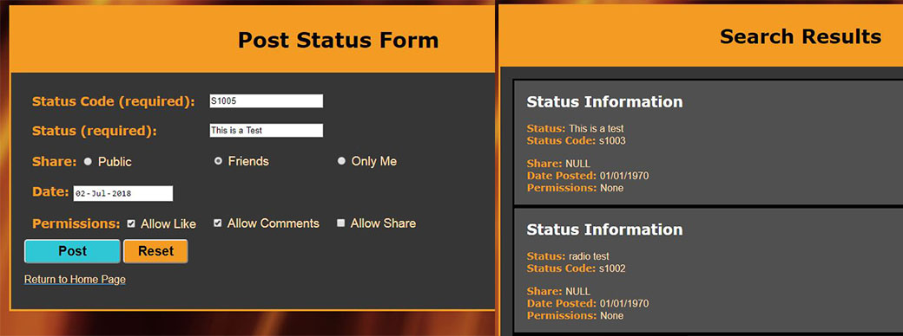

Status Posting System (SPS)
One of my earlier Web Development assignments was to develop a basic Status Posting System. This required the user to be able to enter a status together with a status code, this info would then get place in a SQL database via a PHP back-end. The Status could then be searched by the status text entered by the user, at which point it will return all relevant information.
This assignment gave me good knowledge of forms and form validation in HTML as well as skills on PHP back-end processing.